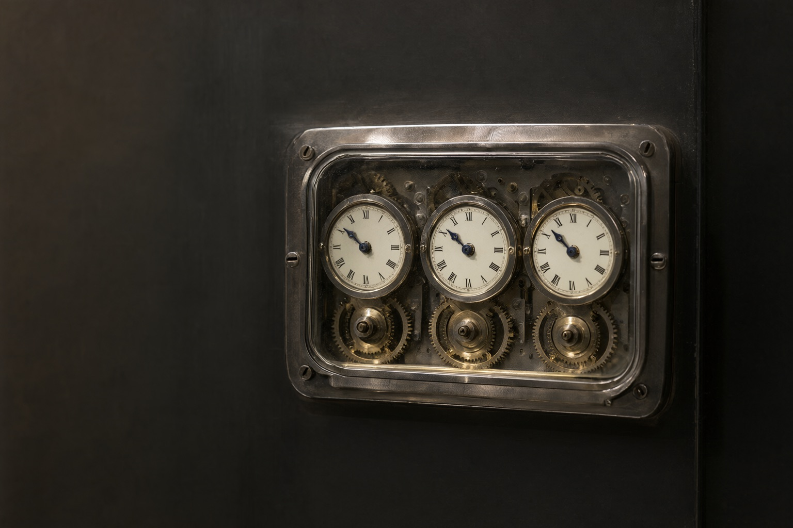
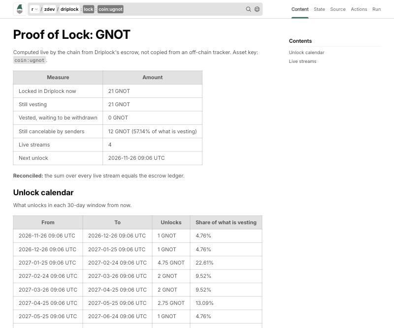

A time lock for tokens.
Since the 1870s, bank vaults have used clockwork time locks. Once the clock is wound, the door stays shut until it runs down. Not the manager, not a robber, nobody opens it early.
Driplock does that for GNOT and GRC20 tokens on gno.land. You lock tokens on a vesting schedule, the recipient draws what has unlocked, and the chain publishes the state of every lock for anyone to check.
Built and tested on gno v1.8.0, the version the Onyx testnet runs. Testnet deployment is next.
Wind it, then watch it run.
A team grant of 12,000 DRIP over twelve months. It unlocks once a month after a three-month cliff. The sender may cancel only before the cliff, and the recipient has named a backup that can take over after six months of silence.
Move the clock forward and see exactly what the chain would let each party do.
- Unlocked so far
- 0 DRIP
- Still locked
- 12,000 DRIP
- Sender can cancel?
- Yes, until month 3
- Who can withdraw
- The recipient
What the clock guarantees
- Anyone can check the lock
-
Today a holder has to trust that "team tokens are locked". Unlock calendars live on third-party trackers, and those trackers ask you to verify big unlocks yourself.
Every token held by Driplock gets a page served by the chain: how much is locked, how much is still vesting, how much a sender could still cancel, a twelve-month unlock calendar, and a check that every stream adds up to the escrow.
- Cancel terms are fixed at the start
-
On many platforms an admin can revoke vesting at any time.
A Driplock stream states its cancel window when it is created, for example "only before the cliff". The stream page shows it, and the chain refuses any cancel after it. What has unlocked is never taken back.
- A lost key is not the end
-
Lose the key to a vesting wallet and every future unlock is gone.
The recipient names a backup address and a silence period. If the recipient stays silent that long, the backup takes the stream over. Payouts triggered by someone else do not reset the clock, so nobody can stall a recovery.
- No pooled accounting to break
-
Shared-pool vesting contracts have been drained through share-accounting bugs. The UNCX incidents lost about $86,000 and later about $1.5 million.
Each stream holds exact units, with no shares. A per-token ledger refuses any payout above what was deposited, and the public lock page reconciles the two.
The page is the proof
gno.land renders a contract's pages straight from its own state. No website or indexer sits in between. That is the page on the right, from a local gno.land node running the real Driplock code with four sample streams.
Every holder, exchange or journalist can open the same page for any token on the live network and read the numbers the chain will enforce.
- Locked, still vesting, claimable and cancelable, per token
- What unlocks in each 30-day window for the next year
- Every live stream with its cancel terms
- A statement with a CSV file for each address, for accounting

Keep a spare key by the door
A recipient sets a backup once:
SetBackup(stream, backupAddress, 180 days)Withdrawing or a one-line Ping shows the recipient is still there. After 180 days of silence, the backup calls ClaimAsBackup and owns what is still owed. Moving a stream to a new owner clears the old backup, so a former owner's backup has no power.
For teams and builders
Vest a whole team in one transaction, with up to fifty recipients paid from a single payment. Choose monthly or quarterly steps or a continuous release, and add a cliff. It works with GNOT or any GRC20 token in the gno.land token registry.
The schedule math is a separate package any contract can import. Read functions return copies, so a DAO, a launchpad or an explorer can build on Driplock without trusting it with anything.
# 12 GNOT over 12 months, monthly, 3-month cliff,
# cancelable only before the cliff (M = 30 days)
gnokey maketx call -pkgpath gno.land/r/<ns>/driplock \
-func CreateCoinStreamFor \
-args <recipient> \
-args $((3*M)) -args $((12*M)) -args $M -args $((3*M)) \
-send 12000000ugnot ...Inspection record
| Automated tests | 57 passing (11 schedule math, 46 contract) |
|---|---|
| Planted bugs | 9 deliberate bugs injected, each caught by the tests |
| Admin keys | None. No function lets anyone override a stream. |
| Cost of the lock page | About 4% of a node's query budget at 200 live streams |
| Review checklist | Follows the gno.land contract review guide: caller identity from the live realm frame, paired payment guards, bounded loops, escaped output |
| Known limit | A GRC20 token's own admin controls its ledger. Stream only tokens you trust. |